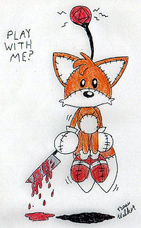

Brontok
 De: La Frikipedia, la enciclopedia extremadamente seria.
De: La Frikipedia, la enciclopedia extremadamente seria.
Brontok es un virus de transmisión sexual computadora , el cuál es mas bien es un gusano comemierda cibernético. Este estúpido pero especial virus posee una característica estupefactamente rara: este es un gusano que ocupa consoladores para venarse de los que cierran el pop-up pop-ups para webearte todo el día , hasta que te cabree y lo mandes a mejor vida , o más conocida como Papelera de reciclaje , lo cual es inútil porque es casi inmortal y te cagará encima toda tu vida , al menos que cages el virus con un paracetamol y una botella de heroína pura antivirus .
Apariencia
Como es un virus de trans... este , virus informático , este puede tener varias formas si fuera real . De acuerdo a la apariencia de la página que abre ( una página totalmente fome con un color de fondo algo así como color moco energético Yoshi fosforecente ) , los científicos y muy amigos de parranda del Dr.House de la escuela Hogwars , actual dueña del Area 51 , expusieron un modelo de cómo sería realmente el gusano de mierda ese:
- El gusano se llamaría Brontiko . Este es un gusano psicodélico anarconazicomugreenpecista , pues hace lo que quiere , controla las computadoras de los
pajerillas frikis , ama greenpeace ( de ahí su color moco sangrando ) y según fuentes externas debe ser amigo de Hitler , pues éste se pasaba jugando Noentiendo 64 , y al ver al Yoshi en Super Wario 93 , se quedó viendo mierdas verdes saltando , y de ahí empezó a investigar todo sobre Yoshi , y , supuestamente , se encontró con Brontiko. La mejor forma de que Brontok no te moleste ( comprobado )
Historia de vida
- Este anarconazicomugreenpecista ( desde ahora lo llamaremos Ancogreenista )es primogénito del Pantallazo Azul de la Muerte y padre del virus barrotes . Debido a su inferioridad de su padre azulado , él se enoja y se va de su casa ( bueno en realidad como son virus cibernéticos suponemos que vivían en chips amorfos inexistentes ). Brontiko jura vengarse de su padre y crear la empresa que derrocaría el éxito que tuvo su padre junto a Microsoft. De ahí conoció a Sonic el erizo y Tails . Los dos bicharracos le permitieron trabajar en los estudios de Mozilla Firefox como limpiador de WC ( o como buena persona un tragamierda que vive de limpiar soretes de elefante ). Desgraciadamente , el gusano se hartó de ver todos los dias lo mismo ( y no me refiero a los trabajadores ) y fué a matar a Tails para ganar la media parte de las acciones de Mozilla. El gusano este le enterró las 2 colas de Tails
<s>en el orto/s> en la boca para ahogarlo , además que estaba aburrido y quería ver algo gracioso , y no hay nada más gracioso que un zorro poniéndose azul con los ojos desorbitados por la asfixia. víctima de la ambición de Brontok
- Luego de la
hermosísima horripilantemente horripilante forma de muerte de Tails , Sonic le da un bajón y regresa al mundo psipsicótico de las drogas y comunismos . Eso no estaba en los planes de Brontiko , pero era mejor . Actualmente es presidente Mozilla Firefox y postula presidente del Congo , para derrocar al fontanero ese de Mario y violarse a Bitch , porque de seguro está aburrido de ver los mismos trolazos mismos trabajadores.
Actualidad
Brontok , como le dicen ahora , está tomando el control del mundo de los virus de transmis... eh , informáticos , ya que a el 78% de los pajeros que tienen PC les aparece el Brontok webeando . El otro 22% está más ocupado echándose pajas mirando televisión que mirando la pantalla del monitor.
Brontok es indonés
Hoy , debido a la genial pero muy mal acertada traducción de Google Chrome , se ha descubierto que el Pop-up Brontok trae mensajes hippis en idioma culero mandalín indonés . Trae cosas como :
- Paren el sexo , las drogas
- No permitan los incendios forestales
- Violaremos a la mamá de quien lea esto ... este , eso es de otra cosa XD
- y otras mierdas que se olvidaron
 Supuestamente este bicharraco fué creado por Brontok ... ¿ en que estaba pensando ese gusano ?
Debido a esto , se cree que Brontok intenta apoderarse de Greenpeace para poder detener la caza de ballenas , para poder robarlas y comprar Microsoft por las ballenas , para que su padre azulejo se vaya a la puta que le parió a su casa amorfamente horrible y fría . Según un post de Mozilla , este podría ser el huevo de nacimiento de Brontok...obviamente este maldito tubo nada que ver con Brontok.
¿Sabías que...
- Brontiko , como se llamaba antes , se cambió el nombre a Brontok en el estado de Kira , y aprobechó el momento para robar la Death Note ?
- Brontiko se alió a Activision del mercado de juegos artesanales ?
- Brontok y el virus Pin Pong crearon al Tails Doll ?
- que Tails Doll al leer la pregunta anterior sacó las imágenes de la página para que el creador se arrepintiera de crear este artículo?(estas fueron reagregadas por otro usuario)
- que si terminas de leer esto Brontok vendra con el virus barrotes y el espiritu de Tails para cortarte tu maldita
polla cabeza ?
- que los trabajadores de Mozilla son zorros ninfómanos que todo el dia miran a un cuadro en el que está una zorra ardiendo en llamas encima de un planeta asqueroso y degradado ?
- que el 98% de las personas que leyeron la pregunta anterior dijeron que ese planeta era la Tierra?
- que el 100% de los que leyeron la pregunta anterior son estúpidas , ya que es obvio que era la Tierra ?
- que el 50% de los que leyeron la pregunta anterior es la mitad?
- que la pregunta anterior no tiene sentido?
- que la pregunta anterior es respondible porque hay que encontrar el sentido?
- que no perderé mi tiempo tratando de responder la pregunta anterior ?
- que todo esto es una chafa y en realidad no hay nada más con que llenarle?
- que el Brontok evolucionará y se convertirá en el Virus Comecarne ?
- que el Virus Comecarne podría aniquilar los wombats y de pasadita a Chuck Norris ?
- que el
Brontok Virus Comecarne se demorará 5 segundos en aparecer ?
- que si creiste la pregunta anterior eres un zoofilico ?
- que si ya te aburriste de este artículo puedes cerrar la página AHORA?
- que si cerrabas la página el Brontok se meterá en tu ordenador?
- que todo esto es mentira?
- que la pregunta anterior es mentira?
- que esta situación de Sabias que...? me está dejando las bolas por el piso?( WTF!?)
Enlaces Externos
Brontok según un usuario de Taringa!
Un raro síntoma provocado el Brontok
Como quitar Brontok (lo creó uno de los cabreados debido a este virus)
Autor(es):
- Kevrochi
- Death Rammstein
- ULTIMEN
Frikipedia 2005-2016, Licencia
GFDL 1.2 - Extraído por FrikiLeaks